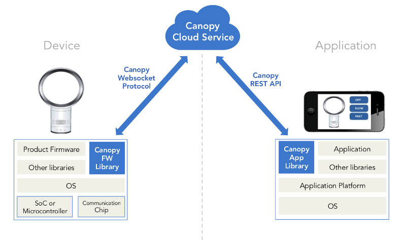

|
The open cloud for IoT
Open source cloud platform for the Internet of Things, plus free hosting to get you started. |
Overview
Canopy simplifies the IoT cloud by acting as a
cloud relay between IoT devices and applications.
cloud relay between IoT devices and applications.

Canopy enables rapid development of IoT solutions
for consumer, commercial and industrial markets.
for consumer, commercial and industrial markets.
Software Features
CLOUD VARIABLES
canopy_var_set_float32(ctx, "humidity", x);
Canopy's Cloud Variables can be accessed in
firmware, but are stored in the cloud and tracked
over time. Cloud Variables make it easy to add
cloud-based remote control and monitoring
to your device.
Learn more
Learn more
CLOUD NOTIFICATIONS
canopy_notify_sms(ctx, "Your laundry is ready");
Canopy's Cloud Notifications let
you send messages to the user from within firmware.
Send SMS, email, or in-app notifications.
Learn more
Learn more
These features help you add remote control, monitoring, and notifications to your product.
Open Source Components
 Embedded Development Kit
Firmware libraries for
cloud-enabled devices. Includes
libcanopy which is a C/C++ library that
brings cloud capabilities to embedded firmware.
|
 Canopy Cloud Service
Secure IoT server software designed for
scale. The server is written in golang and uses
Cassandra for data storage. All features are exposed
to clients via the Canopy REST API and Canopy Websocket Protocol.
|
 Application Development Kit
Libraries for building IoT
apps. Includes
canopy.js which provides
Javascript bindings for building Canopy-based applications.
|
|
|
 Device Manager
Web console for device makers.
Helps you manage your devices throughout the
development, production, and release of your product.
|
|
Learn
more about each of these components in our Developer Zone.
Advantages
|
100% OPEN SOURCE
We believe that royalty-free protocols and open
source software are needed for continued innovation
and interoperability in the IoT space. All source
code is available on GitHub under the Apache v2
License. All specifications and documentation are
published under a Creative Commons license.
|
HARDWARE AGNOSTIC
Canopy Cloud Variables are stored in the cloud and
accessed using web-based protocols. As long as
your device can connect to the Internet you can use
Cloud Variables. In addition, we are working with
several HW vendors to make sure that Canopy works
seamlessly on a variety of hardware platforms.
|
LANGUAGE AGNOSTIC
Canopy is based on RESTful HTTP and Websocket
protocols, so it can be used from nearly any
programming language. We are working on native
client libraries that make development of firmware
and IoT applications using Canopy even simpler.
|
|
RUNS ANYWHERE
Canopy's server-side component (the "Canopy Cloud
Service") is open source and runs anywhere,
including the public cloud, private cloud, hybrid
cloud, LAN, or even on your laptop.
|
HOSTING
Free or paid. Get up and running quickly with our
free hosting. For light usage, we will host your
Cloud Variables for free on our servers. For heavy
commercial usage, you can upgrade to our premium
hosting service.
|
POWERFUL
Cloud Variables are more than just variables. They
are tracked and monitored over time by the server.
They are perfect for IoT sensor data storage,
remote control and remote configuration.
|